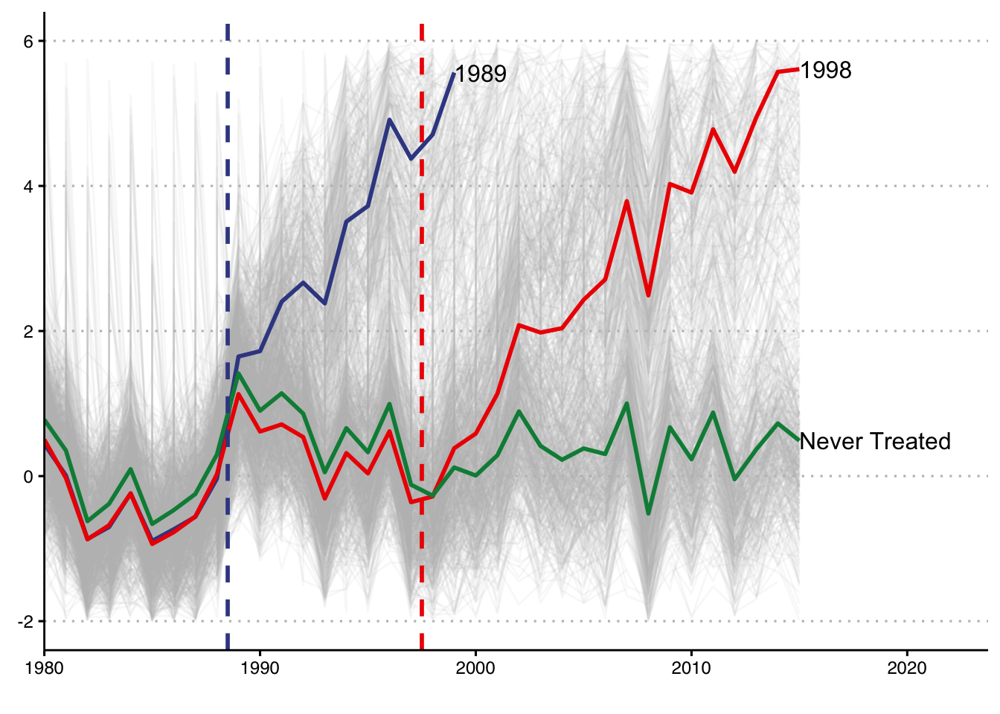
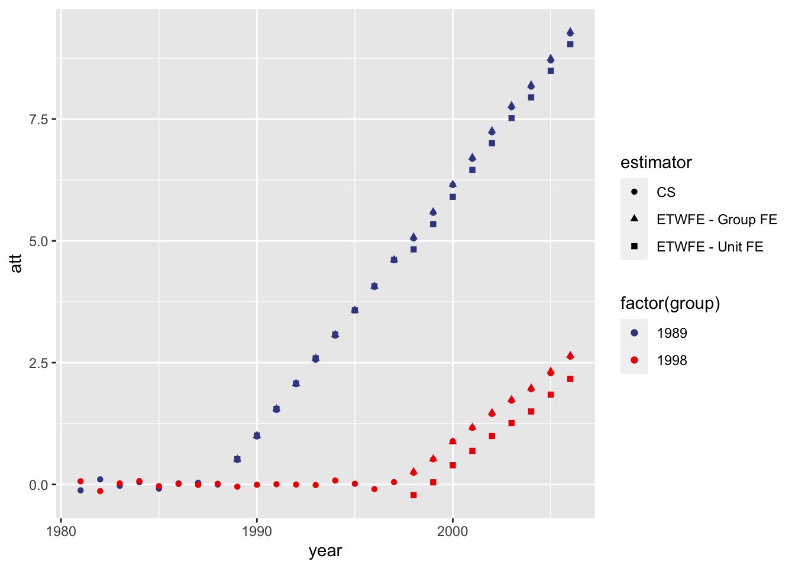

Simulate DID Data
Plot Data

Extended TWFE Model
The problem I’m running into here is as follows. In a panel where there is a later treated unit (e.g., 2007) there should be no interactions with years at or above this. The problem is that when I run it this way, the constant term that is fit in Stata is not fit in R,so the coefficients are off. Only if I allow for these interactions will the coefficients be correct for the first treated groups, but not the latter.
Maybe see here?
Debugging
Structuring the data
- Need to only make interactions between group (
treatment_time) and time (year) whereyear>treatment_time
# This data frame is structured to use not-yet-treated groups as controls.
df_etwfe6 <-
data6 %>%
mutate_at(vars(treatment_time,year), function(x) as.numeric(paste0(x))) %>%
mutate(max_treat = max(treatment_time, na.rm=TRUE)) %>%
# DROP ALL OBSERVATIONS THAT AREN'T iDENTIFIED
filter(year < max_treat) %>%
mutate(year_lt_treatment_time = as.integer(year < treatment_time)) %>%
mutate(year_tmp = case_when(year >= treatment_time ~ year)) %>%
#mutate(year_tmp = case_when(year >= treatment_time & year < max(treatment_time,na.rm=TRUE) ~ year)) %>% THIS IS THE PROBLEMATIC LINE
mutate(treatment_time_tmp = case_when(year >= treatment_time ~ treatment_time)) %>%
mutate(treatment_time = ifelse(is.na(treatment_time),0,treatment_time)) %>%
mutate(treatment_time = factor(treatment_time),
year = factor(year)) %>%
mutate(treatment_time_tmp = factor(treatment_time_tmp),
year_tmp = factor(year_tmp)) %>%
mutate(i = interaction(treat,treatment_time_tmp,year_tmp,sep=":")) %>%
mutate(i = paste0(i)) %>%
dummy_cols("i") %>%
janitor::clean_names() All Groups Eventually Treated
Using group fixed effects.
#1a jwdid dep_var , ivar(unit) tvar(year) gvar(treatment_time) group
fmla1a <- as.formula(glue("dep_var ~ {paste0(grep('i_1_',colnames(df_etwfe6),value=TRUE),collapse = '+')} | treatment_time + year"))
fmla1adep_var ~ i_1_1989_1989 + i_1_1989_1990 + i_1_1989_1991 + i_1_1989_1992 +
i_1_1989_1993 + i_1_1989_1994 + i_1_1989_1995 + i_1_1989_1996 +
i_1_1989_1997 + i_1_1989_1998 + i_1_1989_1999 + i_1_1989_2000 +
i_1_1989_2001 + i_1_1989_2002 + i_1_1989_2003 + i_1_1989_2004 +
i_1_1989_2005 + i_1_1989_2006 + i_1_1998_1998 + i_1_1998_1999 +
i_1_1998_2000 + i_1_1998_2001 + i_1_1998_2002 + i_1_1998_2003 +
i_1_1998_2004 + i_1_1998_2005 + i_1_1998_2006 | treatment_time +
yearfit1a <- feols(fmla1a,df_etwfe6); fit1aOLS estimation, Dep. Var.: dep_var
Observations: 27,540
Fixed-effects: treatment_time: 3, year: 27
Standard-errors: Clustered (treatment_time)
Estimate Std. Error t value Pr(>|t|)
i_1_1989_1989 0.517869 0.005313 97.4663 1.0525e-04 ***
i_1_1989_1990 1.004300 0.010166 98.7881 1.0245e-04 ***
i_1_1989_1991 1.550839 0.004281 362.2268 7.6214e-06 ***
i_1_1989_1992 2.071319 0.014702 140.8870 5.0376e-05 ***
i_1_1989_1993 2.589192 0.015190 170.4546 3.4416e-05 ***
i_1_1989_1994 3.077164 0.016160 190.4184 2.7578e-05 ***
i_1_1989_1995 3.575394 0.017963 199.0412 2.5240e-05 ***
i_1_1989_1996 4.068570 0.017527 232.1337 1.8557e-05 ***
... 19 coefficients remaining (display them with summary() or use argument n)
---
Signif. codes: 0 '***' 0.001 '**' 0.01 '*' 0.05 '.' 0.1 ' ' 1
RMSE: 1.5468 Adj. R2: 0.691977
Within R2: 0.437509est1a <-
tidy(fit1a) %>%
separate(term, into =c("tmp","tmp2","group","year")) %>%
mutate(att = estimate) %>%
select(group, year , att) %>%
mutate(estimator = "ETWFE - Group FE") %>%
mutate_at(vars(group,year), as.numeric)
stata("jwdid dep_var , ivar(unit) tvar(year) gvar(treatment_time) group", data.in = data6 %>% mutate_at(vars(year,treatment_time),function(x) as.numeric(paste0(x)))). jwdid dep_var , ivar(unit) tvar(year) gvar(treatment_time) group
WARNING: Singleton observations not dropped; statistical significance is biased
> (link)
(MWFE estimator converged in 2 iterations)
HDFE Linear regression Number of obs = 27,540
Absorbing 2 HDFE groups F( 27, 999) = 111.72
Statistics robust to heteroskedasticity Prob > F = 0.0000
R-squared = 0.6926
Adj R-squared = 0.6920
Within R-sq. = 0.4375
Number of clusters (unit) = 1,000 Root MSE = 1.5484
(Std. Err. adjusted for 1,000 clusters in unit)
------------------------------------------------------------------------------
| Robust
dep_var | Coef. Std. Err. t P>|t| [95% Conf. Interval]
-------------+----------------------------------------------------------------
treatment_~e#|
year#|
c.__tr__ |
1989 1989 | .5178693 .0372636 13.90 0.000 .4447453 .5909932
1989 1990 | 1.0043 .0415044 24.20 0.000 .9228538 1.085745
1989 1991 | 1.550839 .0475119 32.64 0.000 1.457605 1.644074
1989 1992 | 2.071319 .0560568 36.95 0.000 1.961317 2.181322
1989 1993 | 2.589192 .0648888 39.90 0.000 2.461858 2.716526
1989 1994 | 3.077164 .074136 41.51 0.000 2.931684 3.222645
1989 1995 | 3.575394 .0845013 42.31 0.000 3.409574 3.741215
1989 1996 | 4.06857 .0937119 43.42 0.000 3.884675 4.252464
1989 1997 | 4.612207 .1033639 44.62 0.000 4.409372 4.815042
1989 1998 | 5.079753 .1189554 42.70 0.000 4.846322 5.313184
1989 1999 | 5.596485 .1254812 44.60 0.000 5.350249 5.842722
1989 2000 | 6.158109 .1343776 45.83 0.000 5.894414 6.421804
1989 2001 | 6.713318 .1456057 46.11 0.000 6.42759 6.999046
1989 2002 | 7.258804 .1566236 46.35 0.000 6.951455 7.566153
1989 2003 | 7.775437 .1700776 45.72 0.000 7.441686 8.109187
1989 2004 | 8.200653 .1782936 46.00 0.000 7.85078 8.550526
1989 2005 | 8.744845 .1881211 46.49 0.000 8.375687 9.114003
1989 2006 | 9.291998 .1983105 46.86 0.000 8.902845 9.681151
1998 1998 | .2604234 .0433209 6.01 0.000 .175413 .3454338
1998 1999 | .5240356 .0454425 11.53 0.000 .4348619 .6132094
1998 2000 | .8750152 .0511054 17.12 0.000 .7747289 .9753016
1998 2001 | 1.169471 .0562379 20.80 0.000 1.059113 1.279829
1998 2002 | 1.473139 .0635668 23.17 0.000 1.3484 1.597879
1998 2003 | 1.740737 .0733502 23.73 0.000 1.596798 1.884675
1998 2004 | 1.978509 .0855811 23.12 0.000 1.81057 2.146449
1998 2005 | 2.323759 .0914666 25.41 0.000 2.14427 2.503247
1998 2006 | 2.645879 .0987683 26.79 0.000 2.452061 2.839696
|
_cons | .2219691 .0306909 7.23 0.000 .1617431 .2821951
------------------------------------------------------------------------------
Absorbed degrees of freedom:
--------------------------------------------------------+
Absorbed FE | Categories - Redundant = Num. Coefs |
----------------+---------------------------------------|
treatment_time | 3 0 3 |
year | 27 1 26 |
--------------------------------------------------------+est1a %>% kable()| group | year | att | estimator |
|---|---|---|---|
| 1989 | 1989 | 0.5178693 | ETWFE - Group FE |
| 1989 | 1990 | 1.0042995 | ETWFE - Group FE |
| 1989 | 1991 | 1.5508393 | ETWFE - Group FE |
| 1989 | 1992 | 2.0713192 | ETWFE - Group FE |
| 1989 | 1993 | 2.5891920 | ETWFE - Group FE |
| 1989 | 1994 | 3.0771643 | ETWFE - Group FE |
| 1989 | 1995 | 3.5753941 | ETWFE - Group FE |
| 1989 | 1996 | 4.0685697 | ETWFE - Group FE |
| 1989 | 1997 | 4.6122069 | ETWFE - Group FE |
| 1989 | 1998 | 5.0797534 | ETWFE - Group FE |
| 1989 | 1999 | 5.5964855 | ETWFE - Group FE |
| 1989 | 2000 | 6.1581087 | ETWFE - Group FE |
| 1989 | 2001 | 6.7133184 | ETWFE - Group FE |
| 1989 | 2002 | 7.2588041 | ETWFE - Group FE |
| 1989 | 2003 | 7.7754367 | ETWFE - Group FE |
| 1989 | 2004 | 8.2006526 | ETWFE - Group FE |
| 1989 | 2005 | 8.7448449 | ETWFE - Group FE |
| 1989 | 2006 | 9.2919979 | ETWFE - Group FE |
| 1998 | 1998 | 0.2604234 | ETWFE - Group FE |
| 1998 | 1999 | 0.5240356 | ETWFE - Group FE |
| 1998 | 2000 | 0.8750152 | ETWFE - Group FE |
| 1998 | 2001 | 1.1694712 | ETWFE - Group FE |
| 1998 | 2002 | 1.4731394 | ETWFE - Group FE |
| 1998 | 2003 | 1.7407367 | ETWFE - Group FE |
| 1998 | 2004 | 1.9785092 | ETWFE - Group FE |
| 1998 | 2005 | 2.3237586 | ETWFE - Group FE |
| 1998 | 2006 | 2.6458786 | ETWFE - Group FE |
Using unit fixed effects – this one runs into p
#2b jwdid dep_var , ivar(unit) tvar(year) gvar(treatment_time)
fmla1b <- as.formula(glue("dep_var ~ {paste0(grep('i_1_',colnames(df_etwfe6),value=TRUE),collapse = '+')} | unit + year"))
fit1b <- feols(fmla1b,df_etwfe6)
est1b <-
tidy(fit1b) %>%
separate(term, into =c("tmp","tmp2","group","year")) %>%
mutate(att = estimate) %>%
select(group, year , att) %>%
mutate(estimator = "ETWFE - Unit FE") %>%
mutate_at(vars(group,year), as.numeric)Only Use a Never Treated Group as Control
df_etwfe6b <-
data6b %>%
mutate_at(vars(treatment_time,year), function(x) as.numeric(paste0(x))) %>%
group_by(treatment_time) %>%
arrange(treatment_time,year) %>%
mutate(first_year = as.integer(row_number()==1)) %>%
mutate(treatment_time = ifelse(is.na(treatment_time),0,treatment_time)) %>%
mutate(year_tmp = case_when(year >= treatment_time ~ year)) %>%
mutate(treatment_time_tmp = case_when(year >= treatment_time~ treatment_time)) %>%
mutate(treatment_time = factor(treatment_time),
year = factor(year)) %>%
mutate(treatment_time_tmp = factor(treatment_time_tmp),
year_tmp = factor(year_tmp)) %>%
mutate(i = interaction(treat,treatment_time_tmp,year_tmp,sep=":")) %>%
mutate(i = paste0(i)) %>%
dummy_cols("i") %>%
janitor::clean_names() %>%
select(-i_na)
# This data frame is structured to only use never-treated groups as controls.
df_etwfe6b_nt <-
data6b %>%
mutate_at(vars(treatment_time,year), function(x) as.numeric(paste0(x))) %>%
mutate(treat = 1) %>%
mutate(treatment_time = ifelse(is.na(treatment_time),0,treatment_time)) %>%
group_by(treatment_time) %>%
mutate(first_year = as.integer(year == min(year,na.rm=TRUE))) %>%
ungroup() %>%
# mutate(year_tmp = year,
# treatment_time_tmp = treatment_time) %>%
mutate(year_tmp = case_when(first_year!=1 ~ year)) %>%
mutate(treatment_time_tmp = case_when( first_year != 1~ treatment_time)) %>%
mutate(treatment_time_tmp = factor(treatment_time_tmp),
year_tmp = factor(year_tmp)) %>%
mutate(treatment_time = factor(treatment_time),
year = factor(year)) %>%
mutate(i = interaction(treat,treatment_time_tmp,year_tmp,sep=":")) %>%
mutate(i = paste0(i)) %>%
dummy_cols("i") %>%
janitor::clean_names() %>%
select(-contains("i_1_0_"))
#2a jwdid dep_var , ivar(unit) tvar(year) gvar(treatment_time) group
fmla2a <- as.formula(glue("dep_var ~ {paste0(grep('i_1_',colnames(df_etwfe6b),value=TRUE),collapse = '+')} | treatment_time + year"))
fmla2adep_var ~ i_1_1989_1989 + i_1_1989_1990 + i_1_1989_1991 + i_1_1989_1992 +
i_1_1989_1993 + i_1_1989_1994 + i_1_1989_1995 + i_1_1989_1996 +
i_1_1989_1997 + i_1_1989_1998 + i_1_1989_1999 + i_1_1989_2000 +
i_1_1989_2001 + i_1_1989_2002 + i_1_1989_2003 + i_1_1989_2004 +
i_1_1989_2005 + i_1_1989_2006 + i_1_1989_2007 + i_1_1989_2008 +
i_1_1989_2009 + i_1_1989_2010 + i_1_1989_2011 + i_1_1989_2012 +
i_1_1989_2013 + i_1_1989_2014 + i_1_1989_2015 + i_1_1998_1998 +
i_1_1998_1999 + i_1_1998_2000 + i_1_1998_2001 + i_1_1998_2002 +
i_1_1998_2003 + i_1_1998_2004 + i_1_1998_2005 + i_1_1998_2006 +
i_1_1998_2007 + i_1_1998_2008 + i_1_1998_2009 + i_1_1998_2010 +
i_1_1998_2011 + i_1_1998_2012 + i_1_1998_2013 + i_1_1998_2014 +
i_1_1998_2015 | treatment_time + yearfit2a <- feols(fmla2a,df_etwfe6b)
est2a <-
tidy(fit2a) %>%
separate(term, into =c("tmp","tmp2","group","year")) %>%
mutate(att = estimate) %>%
select(group, year , att) %>%
mutate(estimator = "ETWFE - Group FE") %>%
mutate_at(vars(group,year), as.numeric)
#2b jwdid dep_var , ivar(unit) tvar(year) gvar(treatment_time)
fmla2b <- as.formula(glue("dep_var ~ {paste0(grep('i_1_',colnames(df_etwfe6b),value=TRUE),collapse = '+')} | unit + year"))
fmla2bdep_var ~ i_1_1989_1989 + i_1_1989_1990 + i_1_1989_1991 + i_1_1989_1992 +
i_1_1989_1993 + i_1_1989_1994 + i_1_1989_1995 + i_1_1989_1996 +
i_1_1989_1997 + i_1_1989_1998 + i_1_1989_1999 + i_1_1989_2000 +
i_1_1989_2001 + i_1_1989_2002 + i_1_1989_2003 + i_1_1989_2004 +
i_1_1989_2005 + i_1_1989_2006 + i_1_1989_2007 + i_1_1989_2008 +
i_1_1989_2009 + i_1_1989_2010 + i_1_1989_2011 + i_1_1989_2012 +
i_1_1989_2013 + i_1_1989_2014 + i_1_1989_2015 + i_1_1998_1998 +
i_1_1998_1999 + i_1_1998_2000 + i_1_1998_2001 + i_1_1998_2002 +
i_1_1998_2003 + i_1_1998_2004 + i_1_1998_2005 + i_1_1998_2006 +
i_1_1998_2007 + i_1_1998_2008 + i_1_1998_2009 + i_1_1998_2010 +
i_1_1998_2011 + i_1_1998_2012 + i_1_1998_2013 + i_1_1998_2014 +
i_1_1998_2015 | unit + yearfit2b <- feols(fmla2b,df_etwfe6b)
est2b <-
tidy(fit2b) %>%
separate(term, into =c("tmp","tmp2","group","year")) %>%
mutate(att = estimate) %>%
select(group, year , att) %>%
mutate(estimator = "ETWFE - Unit FE") %>%
mutate_at(vars(group,year), as.numeric)#2b jwdid dep_var , ivar(unit) tvar(year) gvar(treatment_time)
fmla2b <- as.formula(glue("dep_var ~ {paste0(grep('i_1_',colnames(df_etwfe6b),value=TRUE),collapse = '+')} | unit + year"))
fmla2bdep_var ~ i_1_1989_1989 + i_1_1989_1990 + i_1_1989_1991 + i_1_1989_1992 +
i_1_1989_1993 + i_1_1989_1994 + i_1_1989_1995 + i_1_1989_1996 +
i_1_1989_1997 + i_1_1989_1998 + i_1_1989_1999 + i_1_1989_2000 +
i_1_1989_2001 + i_1_1989_2002 + i_1_1989_2003 + i_1_1989_2004 +
i_1_1989_2005 + i_1_1989_2006 + i_1_1989_2007 + i_1_1989_2008 +
i_1_1989_2009 + i_1_1989_2010 + i_1_1989_2011 + i_1_1989_2012 +
i_1_1989_2013 + i_1_1989_2014 + i_1_1989_2015 + i_1_1998_1998 +
i_1_1998_1999 + i_1_1998_2000 + i_1_1998_2001 + i_1_1998_2002 +
i_1_1998_2003 + i_1_1998_2004 + i_1_1998_2005 + i_1_1998_2006 +
i_1_1998_2007 + i_1_1998_2008 + i_1_1998_2009 + i_1_1998_2010 +
i_1_1998_2011 + i_1_1998_2012 + i_1_1998_2013 + i_1_1998_2014 +
i_1_1998_2015 | unit + yearfit2b <- feols(fmla2b,df_etwfe6b)
est2b <-
tidy(fit2b) %>%
separate(term, into =c("tmp","tmp2","group","year")) %>%
mutate(att = estimate) %>%
select(group, year , att) %>%
mutate(estimator = "ETWFE - Unit FE") %>%
mutate_at(vars(group,year), as.numeric)
## NEED TO GET RID OF ONE MORE CATEGORY (1998 x 1980)
#2c jwdid dep_var , ivar(unit) tvar(year) gvar(treatment_time) group never
fmla2c <- as.formula(glue("dep_var ~ {paste0(grep('i_1_',colnames(df_etwfe6b_nt),value=TRUE),collapse = '+')} | treatment_time + year"))
fit2c <- feols(fmla2c,df_etwfe6b_nt)
est2c <-
tidy(fit2c) %>%
separate(term, into =c("tmp","tmp2","group","year")) %>%
mutate(att = estimate) %>%
select(group, year , att) %>%
mutate(estimator = "ETWFE - NT Cx - Group FE") %>%
mutate_at(vars(group,year), as.numeric); est2c# A tibble: 70 × 4
group year att estimator
<dbl> <dbl> <dbl> <chr>
1 1989 1981 0.0457 ETWFE - NT Cx - Group FE
2 1989 1982 0.0105 ETWFE - NT Cx - Group FE
3 1989 1983 -0.0485 ETWFE - NT Cx - Group FE
4 1989 1984 0.00327 ETWFE - NT Cx - Group FE
5 1989 1985 0.0404 ETWFE - NT Cx - Group FE
6 1989 1986 0.0488 ETWFE - NT Cx - Group FE
7 1989 1987 0.0339 ETWFE - NT Cx - Group FE
8 1989 1988 0.0729 ETWFE - NT Cx - Group FE
9 1989 1989 0.551 ETWFE - NT Cx - Group FE
10 1989 1990 1.07 ETWFE - NT Cx - Group FE
# … with 60 more rows
# ℹ Use `print(n = ...)` to see more rows#2d jwdid dep_var , ivar(unit) tvar(year) gvar(treatment_time) never !!!! THIS ONE SEEMS TO BE WRONG IN STATA ...
fmla2d <- as.formula(glue("dep_var ~ {paste0(grep('i_1_',colnames(df_etwfe6b_nt),value=TRUE),collapse = '+')} | unit + year"))
fit2d <- feols(fmla2d,df_etwfe6b_nt %>% mutate(unit = factor(unit)))
est2d <-
tidy(fit2d) %>%
separate(term, into =c("tmp","tmp2","group","year")) %>%
mutate(att = estimate) %>%
select(group, year , att) %>%
mutate(estimator = "ETWFE - NT Cx - Unit FE") %>%
mutate_at(vars(group,year), as.numeric); est2d# A tibble: 70 × 4
group year att estimator
<dbl> <dbl> <dbl> <chr>
1 1989 1981 -2.13 ETWFE - NT Cx - Unit FE
2 1989 1982 -2.17 ETWFE - NT Cx - Unit FE
3 1989 1983 -2.22 ETWFE - NT Cx - Unit FE
4 1989 1984 -2.17 ETWFE - NT Cx - Unit FE
5 1989 1985 -2.14 ETWFE - NT Cx - Unit FE
6 1989 1986 -2.13 ETWFE - NT Cx - Unit FE
7 1989 1987 -2.14 ETWFE - NT Cx - Unit FE
8 1989 1988 -2.10 ETWFE - NT Cx - Unit FE
9 1989 1989 -1.62 ETWFE - NT Cx - Unit FE
10 1989 1990 -1.10 ETWFE - NT Cx - Unit FE
# … with 60 more rows
# ℹ Use `print(n = ...)` to see more rowsstata("
replace treatment_time = 0 if treatment_time==.
jwdid dep_var , ivar(unit) tvar(year) gvar(treatment_time) never
", data.in = data6b %>% mutate_at(vars(year,treatment_time),function(x) as.numeric(paste0(x)))).
. replace treatment_time = 0 if treatment_time==.
(11,520 real changes made)
. jwdid dep_var , ivar(unit) tvar(year) gvar(treatment_time) never
WARNING: Singleton observations not dropped; statistical significance is biased
> (link)
(MWFE estimator converged in 2 iterations)
HDFE Linear regression Number of obs = 36,720
Absorbing 2 HDFE groups F( 70, 999) = 52.72
Statistics robust to heteroskedasticity Prob > F = 0.0000
R-squared = 0.8933
Adj R-squared = 0.8900
Within R-sq. = 0.6644
Number of clusters (unit) = 1,000 Root MSE = 1.4030
(Std. Err. adjusted for 1,000 clusters in unit)
------------------------------------------------------------------------------
| Robust
dep_var | Coef. Std. Err. t P>|t| [95% Conf. Interval]
-------------+----------------------------------------------------------------
treatment_~e#|
year#|
c.__tr__ |
1989 1981 | -2.13068 .2781846 -7.66 0.000 -2.676574 -1.584787
1989 1982 | -2.165824 .2838223 -7.63 0.000 -2.72278 -1.608868
1989 1983 | -2.224826 .2813932 -7.91 0.000 -2.777015 -1.672636
1989 1984 | -2.173094 .2812326 -7.73 0.000 -2.724968 -1.62122
1989 1985 | -2.135981 .2823926 -7.56 0.000 -2.690132 -1.581831
1989 1986 | -2.127594 .2819504 -7.55 0.000 -2.680877 -1.574311
1989 1987 | -2.142484 .2810383 -7.62 0.000 -2.693977 -1.590991
1989 1988 | -2.103464 .2824816 -7.45 0.000 -2.65779 -1.549139
1989 1989 | -1.624911 .2838119 -5.73 0.000 -2.181847 -1.067975
1989 1990 | -1.102836 .2845056 -3.88 0.000 -1.661133 -.544539
1989 1991 | -.5366926 .2837746 -1.89 0.059 -1.093555 .02017
1989 1992 | -.0726824 .2857726 -0.25 0.799 -.6334659 .4881011
1989 1993 | .4562377 .2849997 1.60 0.110 -.1030291 1.015504
1989 1994 | 1.013602 .2874776 3.53 0.000 .449473 1.577731
1989 1995 | 1.44858 .2904825 4.99 0.000 .8785537 2.018605
1989 1996 | 2.074765 .2940846 7.05 0.000 1.497671 2.65186
1989 1997 | 2.534337 .2960339 8.56 0.000 1.953418 3.115257
1989 1998 | 3.059938 .298301 10.26 0.000 2.474569 3.645306
1989 1999 | 3.519583 .3021084 11.65 0.000 2.926743 4.112423
1989 2000 | 4.061689 .3073895 13.21 0.000 3.458486 4.664892
1989 2001 | 4.526754 .3117569 14.52 0.000 3.91498 5.138527
1989 2002 | 5.079941 .3156834 16.09 0.000 4.460463 5.69942
1989 2003 | 5.634095 .3220921 17.49 0.000 5.00204 6.26615
1989 2004 | 6.031187 .3253152 18.54 0.000 5.392808 6.669567
1989 2005 | 6.574809 .3302243 19.91 0.000 5.926797 7.222822
1989 2006 | 7.16533 .3383616 21.18 0.000 6.501349 7.829311
1989 2007 | 7.634926 .3426029 22.29 0.000 6.962622 8.30723
1989 2008 | 8.173451 .3490919 23.41 0.000 7.488413 8.858489
1989 2009 | 8.640451 .3535604 24.44 0.000 7.946645 9.334258
1989 2010 | 9.173808 .358396 25.60 0.000 8.470513 9.877103
1989 2011 | 9.707677 .367764 26.40 0.000 8.985999 10.42936
1989 2012 | 10.18169 .3764892 27.04 0.000 9.442889 10.92049
1989 2013 | 10.76687 .3815876 28.22 0.000 10.01806 11.51567
1989 2014 | 11.26021 .3894645 28.91 0.000 10.49595 12.02447
1989 2015 | 11.67952 .3990549 29.27 0.000 10.89644 12.4626
1998 1981 | -4.154931 .4950212 -8.39 0.000 -5.126331 -3.18353
1998 1982 | -4.145238 .506249 -8.19 0.000 -5.138672 -3.151805
1998 1983 | -4.163393 .4991961 -8.34 0.000 -5.142986 -3.1838
1998 1984 | -4.117665 .5016832 -8.21 0.000 -5.102139 -3.133191
1998 1985 | -4.183229 .5046189 -8.29 0.000 -5.173463 -3.192994
1998 1986 | -4.151837 .5070184 -8.19 0.000 -5.14678 -3.156893
1998 1987 | -4.119726 .5027954 -8.19 0.000 -5.106382 -3.13307
1998 1988 | -4.100275 .5040219 -8.14 0.000 -5.089338 -3.111212
1998 1989 | -4.144802 .5045463 -8.21 0.000 -5.134894 -3.15471
1998 1990 | -4.150831 .5035879 -8.24 0.000 -5.139042 -3.16262
1998 1991 | -4.132798 .5025636 -8.22 0.000 -5.118999 -3.146597
1998 1992 | -4.108177 .5039346 -8.15 0.000 -5.097069 -3.119285
1998 1993 | -4.212871 .5000489 -8.42 0.000 -5.194138 -3.231604
1998 1994 | -4.077489 .5015331 -8.13 0.000 -5.061668 -3.093309
1998 1995 | -4.172908 .5026526 -8.30 0.000 -5.159284 -3.186532
1998 1996 | -4.072899 .5011463 -8.13 0.000 -5.056319 -3.089479
1998 1997 | -4.073735 .5041295 -8.08 0.000 -5.063009 -3.084461
1998 1998 | -3.90725 .4995883 -7.82 0.000 -4.887612 -2.926887
1998 1999 | -3.578686 .4961812 -7.21 0.000 -4.552363 -2.605009
1998 2000 | -3.229124 .4953636 -6.52 0.000 -4.201197 -2.257052
1998 2001 | -2.887718 .4977424 -5.80 0.000 -3.864459 -1.910977
1998 2002 | -2.541988 .4874357 -5.22 0.000 -3.498503 -1.585473
1998 2003 | -2.222443 .4914583 -4.52 0.000 -3.186852 -1.258034
1998 2004 | -2.024433 .4894436 -4.14 0.000 -2.984888 -1.063977
1998 2005 | -1.660049 .4867218 -3.41 0.001 -2.615163 -.7049346
1998 2006 | -1.256683 .4871236 -2.58 0.010 -2.212586 -.3007798
1998 2007 | -1.003088 .4878721 -2.06 0.040 -1.960459 -.0457158
1998 2008 | -.6607098 .4835464 -1.37 0.172 -1.609593 .2881733
1998 2009 | -.4652009 .4837085 -0.96 0.336 -1.414402 .4840003
1998 2010 | -.147981 .4806668 -0.31 0.758 -1.091213 .7952514
1998 2011 | .2988659 .482425 0.62 0.536 -.6478167 1.245548
1998 2012 | .5724526 .482922 1.19 0.236 -.3752052 1.52011
1998 2013 | .9317273 .486148 1.92 0.056 -.022261 1.885716
1998 2014 | 1.272859 .485385 2.62 0.009 .3203682 2.22535
1998 2015 | 1.410131 .4921544 2.87 0.004 .4443558 2.375906
|
_cons | 2.28901 .258125 8.87 0.000 1.782481 2.79554
------------------------------------------------------------------------------
Absorbed degrees of freedom:
-----------------------------------------------------+
Absorbed FE | Categories - Redundant = Num. Coefs |
-------------+---------------------------------------|
unit | 1000 1000 0 *|
year | 36 1 35 |
-----------------------------------------------------+
* = FE nested within cluster; treated as redundant for DoF computation
. Estimate CS
data6_cs <-
data6 %>%
mutate(year = as.numeric(paste0(year)),
treatment_time = as.numeric(paste0(treatment_time))) %>%
mutate(treatment_time = ifelse(is.na(treatment_time),0,treatment_time))
fit_cs6 <- att_gt(yname = "dep_var",
tname = "year",
idname = "unit",
gname = "treatment_time",
control_group = "notyettreated",
data = data6_cs
)Warning in pre_process_did(yname = yname, tname = tname, idname = idname, :
Dropped 20 observations while converting to balanced panel.est_cs6 <- tibble(group = fit_cs6$group, year = fit_cs6$t, att = fit_cs6$att) %>%
mutate(estimator = "CS") data6b_cs <-
data6b %>%
mutate(year = as.numeric(paste0(year)),
treatment_time = as.numeric(paste0(treatment_time))) %>%
mutate(treatment_time = ifelse(is.na(treatment_time),0,treatment_time))Warning in mask$eval_all_mutate(quo): NAs introduced by coercionfit_cs6b <- att_gt(yname = "dep_var",
tname = "year",
idname = "unit",
gname = "treatment_time",
control_group = "nevertreated",
data = data6b_cs
)Warning in pre_process_did(yname = yname, tname = tname, idname = idname, :
Dropped 20 observations while converting to balanced panel.est_cs6b <- tibble(group = fit_cs6b$group, year = fit_cs6b$t, att = fit_cs6b$att) %>%
mutate(estimator = "CS")Compare
est1a %>%
bind_rows(est1b) %>%
bind_rows(est_cs6) %>%
ggplot(aes(x = year, y = att, colour = factor(group), pch = estimator)) +
geom_point() +
#ggthemes::theme_clean() +
ggsci::scale_color_aaas() 
est2a %>%
bind_rows(est2b) %>%
bind_rows(est2c) %>%
bind_rows(est2d) %>%
bind_rows(est_cs6b) %>%
ggplot(aes(x = year, y = att, colour = factor(group), pch = estimator)) +
geom_point() +
#theme_clean() +
ggsci::scale_color_aaas() +
#scale_shape_manual(values =c(19,4,3)) +
facet_grid(~group)